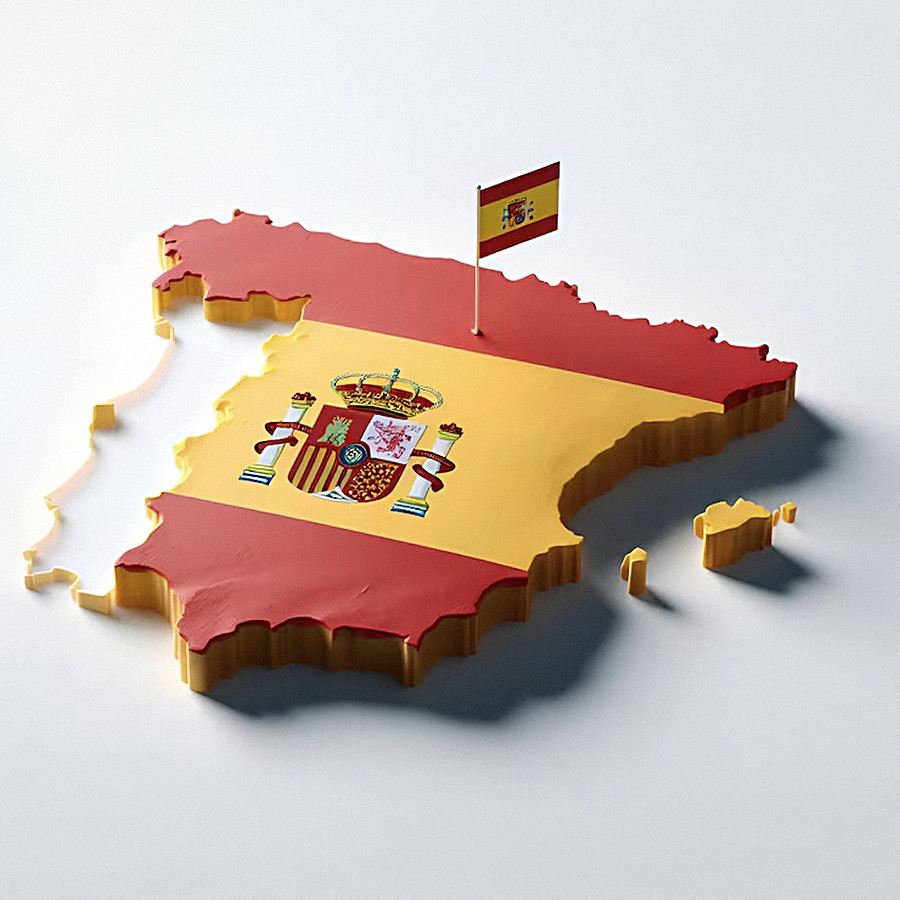

Inmune al crowding out externo
Sin tipo de cambio propio, el déficit fiscal no encarece las exportaciones ni el turismo.
El país que ahorra demasiado.
Cada pregunta del parcial se responde con la misma identidad contable. El caso español es interesante porque las respuestas no son las que la teoría sugiere.
¿El Estado le quita el crédito a las empresas? Sí, pero el canal está atenuado.
¿España vive por encima de sus posibilidades? No: lleva una década prestando al mundo.
¿Cuánto le cuesta financiarse? Unos 50 p.b. sobre Alemania: mínimo en 17 años.
¿Déficit fiscal + déficit externo? No hay gemelos: el ahorro privado lo evita.
Cuando el Estado compite por el crédito de quienes ahorran y encarece la inversión privada.
El Gobierno gasta más de lo que recauda (G > T), sale a pedir prestado dentro del país y absorbe parte del ahorro disponible. Con menos fondos y más demanda, el precio del dinero sube: pedir prestado se vuelve caro justo para quien iba a invertir.
No es que el Estado «se lleve» el dinero: es que sube su precio.
El gasto público menos los impuestos netos de transferencias.
La deuda que emite el Tesoro para financiar ese hueco. Compite con el crédito privado.
El tipo que equilibra el mercado de fondos prestables.
El Gobierno gasta más de lo que recauda y necesita financiar la diferencia.
El Tesoro entra al mercado de fondos prestables a competir por el ahorro.
El ahorro público es negativo y resta capacidad de financiación al sistema.
Más demanda de fondos con la misma oferta: el precio del crédito aumenta.
Con crédito más caro, las empresas aplazan maquinaria, fábricas e innovación.
La oferta de fondos (ahorro) se desplaza a la izquierda cuando el Estado aparece como demandante. El nuevo equilibrio se alcanza con una tasa más alta y menos inversión financiada.
El Tesoro emite bonos → la oferta de fondos se contrae y el equilibrio sube por la curva de demanda.
Por eso el crowding out español es moderado y no el de un país con moneda propia.
España compite por fondos con 19 países y un mercado de capitales integrado.
La política monetaria es única: el déficit fiscal no dispara la tasa de toda la eurozona.
Los bancos españoles compran deuda soberana y cierran el grifo del crédito a las pymes.
La economía real frente al mundo: qué vende España, qué compra y con qué se financia.
España no le pide prestado al mundo: le presta.
Más de una década consecutiva con saldo positivo, incluso en años de crisis. El superávit no depende del ciclo: depende de la estructura de la economía.
Ni la pandemia ni la crisis energética lograron llevarla a terreno negativo.
España compra al exterior más bienes físicos de los que vende: combustibles, vehículos, maquinaria y tecnología. No produce petróleo ni gas, y eso se nota en cada crisis energética.
El turismo y los servicios profesionales generan un excedente tan grande que cubre el hueco de los bienes y deja la cuenta corriente en positivo.
La prima que exige el mercado por prestarle a España en lugar de a Alemania.
Es el interés extra que debe pagar el Tesoro para convencer a los inversionistas. Se mide en puntos básicos: 1% = 100 p.b.
Mínimo de los últimos 17 años: el mercado presta a España casi al precio de Alemania.
Con superávit externo no depende de que los extranjeros le presten todos los días.
2,8% en 2025, con el mercado laboral en su mejor nivel en más de una década.
Del 6,9% del PIB en 2021 al 2,4% en 2025. Las agencias han mejorado la nota.
La identidad macroeconómica que siempre se cumple, y lo que revela del caso español.
Ahorro de familias y empresas menos su inversión. En España: +5,6% del PIB.
Impuestos menos gasto público. En España: −2,4% del PIB.
Exportaciones menos importaciones. En España: +3,2% del PIB.
(+5,6) + (−2,4) = +3,2 · La cuenta cuadra y el superávit externo sale del ahorro privado.
Déficits gemelos = déficit fiscal y déficit externo al mismo tiempo.
El ahorro privado no solo cubre el déficit: sobra.
Los gemelos aparecen cuando el sector privado está equilibrado o desahorrando. Aquí ocurre lo contrario: familias y empresas ahorran mucho más de lo que invierten, y ese exceso financia al Estado y al resto del mundo.
El euro no sube porque el Tesoro español emita más deuda: la moneda es de 20 países.
Con superávit externo, España no depende de capitales extranjeros que puedan retirarse.
Esa independencia explica una prima de riesgo de 50 p.b. con una deuda del 100% del PIB.
Sin tipo de cambio propio, el déficit fiscal no encarece las exportaciones ni el turismo.
El superávit externo reduce la dependencia de capitales que puedan asustarse y huir.
Que sobre ahorro también significa que las empresas invierten poco: menos productividad y salarios más bajos en el futuro.

¿Es sostenible crecer con tan poca inversión?